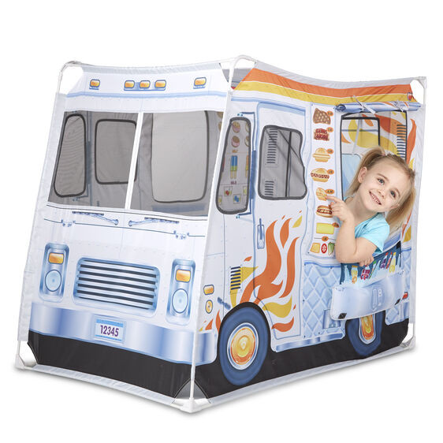
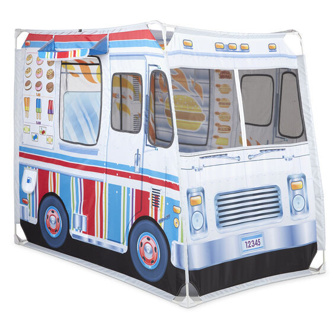
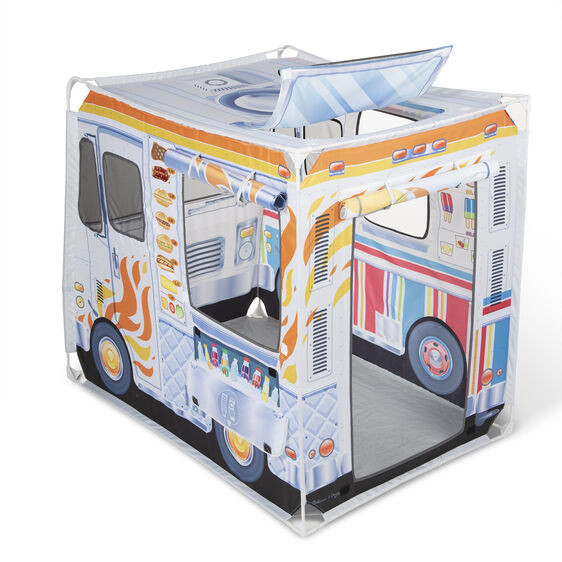
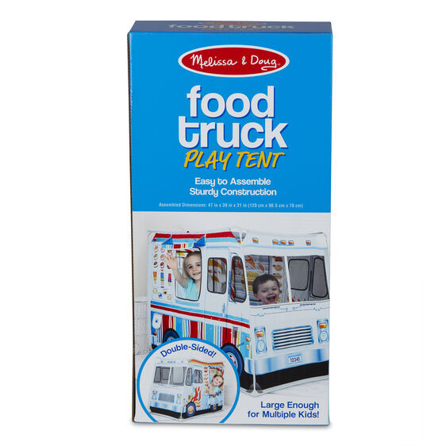
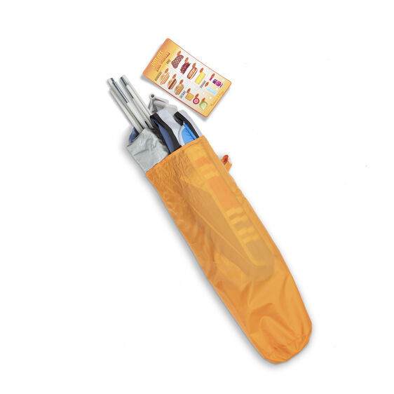

Food Truck Play Set (Fabric)
Vehicles
Contact for priceRoomy and sturdy 4-foot-long food truck indoor or outdoor fabric tent playhouse with vibrant, full-color exterior artwork Barbecue theme on one side, ice cream truck on the other; back door entry and pass-through windows on both sides with roll-up flaps; mesh fabric in front windows and sturdy floor material Playful details include gas tank, illustrated food menus, drink display in cooler with flap that opens, sunroof with flap; includes double-sided reusable menu activity card, handy take-along storage tote, easy illustrated assembly instructions Extra big with room for multiple kids to play Great gift for budding young chefs, ages 3-6, for hands-on, screen-free play Product: 47
Enquire about this product



Food Truck Play Set (Fabric) at Kids Corner KZN
Food Truck Play Set (Fabric) is part of our Vehicles collection. Kids Corner KZN stocks toys for learning, pretend play, creative play, gifting and everyday childhood discovery in South Africa.
Browse more Vehicles toys